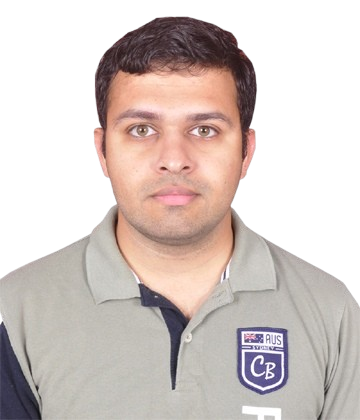
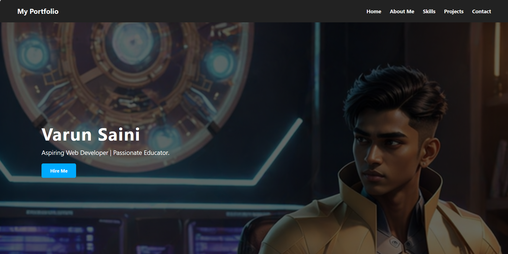
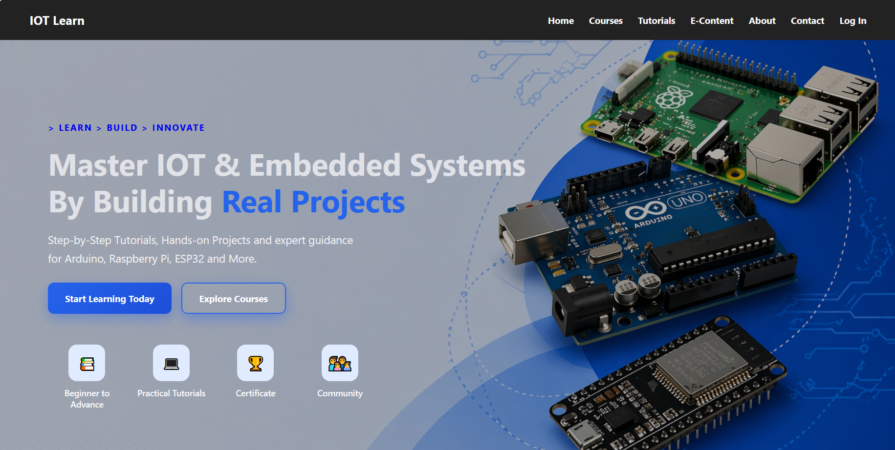
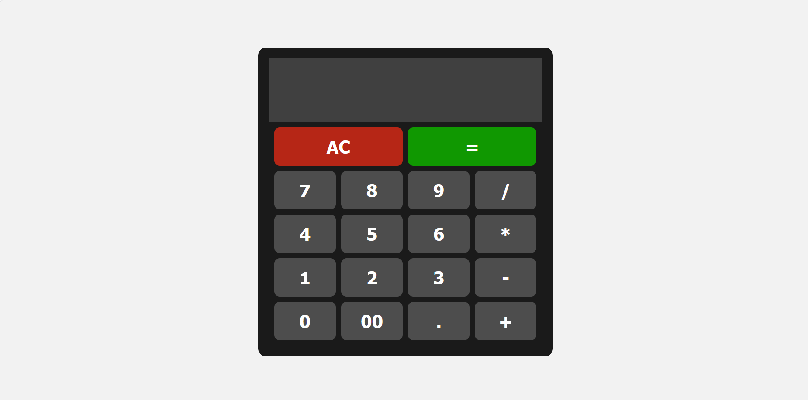

Aspiring Web Developer | Passionate Educator.

I am an aspiring web developer and a passionate educator, currently working as a Science and Mathematics teacher. With a strong academic background in Physics, Chemistry, and Mathematics, I enjoy breaking down complex concepts into simple, engaging ideas—both in the classroom and in code.
My journey into web development is driven by curiosity and a desire to build meaningful digital experiences. I am continuously learning modern web technologies and applying problem-solving skills developed through teaching to create clean, user-friendly, and impactful solutions.
As a teacher, I believe in clarity, creativity, and continuous growth values that I bring into my development work as well. I am particularly interested in building projects that combine education and technology to make learning more accessible and interactive.
I am currently focused on improving my skills in front-end and back-end development and am eager to collaborate, learn, and contribute to real-world projects.
Download ResumeClient side Web Technology, Server side Web Technology, JAVA, DSA in C++, Python, and more.
Major: Pedagogy of Science, Pedagogy of Mathematics
Major: Physics, Chemistry, Mathematics Minor: Computer Awareness, Environmental Science, English, Sanskrit

Portfolio Design Project

Landing Page Project

Calculator Project
Email: varunsaini00009@gmail.com
Phone: +91 70563 38595